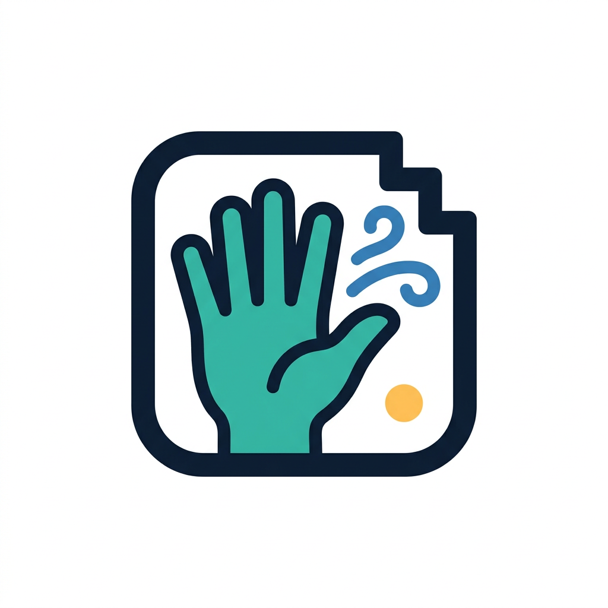
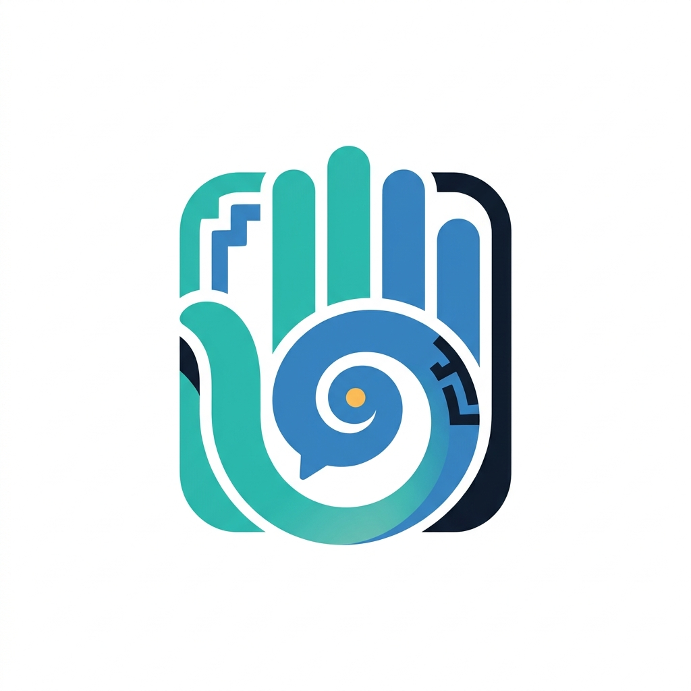
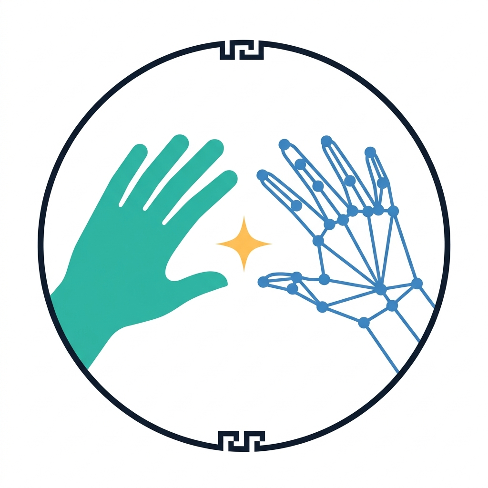

Glifo

Concepto A «Glifo»: la mano dentro de un bloque de glifo maya. Es el más «maya» y el más fácil de reconocer como ícono.
Revisión: cumple, con detalles
Mano con 5 dedos bien separados (4 + pulgar) dentro del cuadro redondeado tipo glifo, greca escalonada en una sola esquina, punto ámbar y sin texto. Se lee muy bien en pequeño. Detalles: las 2 volutas salen del costado de la mano, no de las puntas de los dedos; la mano no es simétrica (pulgar abierto a la derecha) y queda cortada por el borde inferior del cuadro. Las volutas son finas y a 32 px casi desaparecen.
Mano que habla

Concepto B «Mano que habla»: una sola forma; la mano y la voluta de la palabra son la misma figura. El más limpio y moderno.
Revisión: cumple a medias
Hay 4 barras verticales como dedos y el pulgar se enrolla en una voluta con un punto ámbar al centro; dentro de la espiral hay una burbuja de diálogo con su colita. No es «una sola figura»: añade un marco azul marino lateral, dos grecas que no se pidieron y cortes blancos entre las piezas. Usa un solo degradado suave (permitido). La mano cuesta reconocerla: se ve más como un emblema abstracto que como una mano, sobre todo en pequeño. Sin texto.
Diálogo

Concepto C «Diálogo»: la mano humana y la mano del avatar (hecha de puntos de seguimiento) se encuentran. Cuenta toda la idea del proyecto: persona ↔ sistema ↔ avatar.
Revisión: cumple a medias
Dos manos de 5 dedos frente a frente: la izquierda sólida (jade) y la derecha de puntos y líneas (azul), chispa ámbar al centro, aro azul marino con greca arriba y abajo, sin texto. Cuenta muy bien la idea del proyecto. Detalles: las manos no son simétricas ni están a la misma altura (la izquierda entra en diagonal desde abajo y la corta el aro); la red de puntos de la derecha no sigue con exactitud los 21 puntos de MediaPipe (hay líneas de más en la palma). El aro y las líneas son finos: a 64 px se ve regular y a 32 px se pierde.